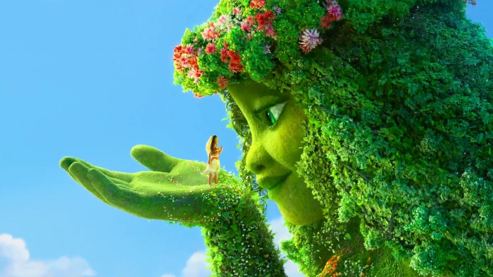

Question 1. Are traditional or "natural" characteristics of human being going to be recognized as antiquities of olden days?
After all these readings and screenings through, it seems possible to be like that. I have thought myself as a strong feminist so far, but now I can sense I was not so radical than I thought. By alienating themselves from the society's rules and oppression, feminists of this generation seeks the whole new humankind with expanding their horizon of technology. Kurdish society keeps moving forward and backward to reach their democratic and feministic ideology in the midst of war. We have been assuming naturally that the goal of future AI is to be like human, however, AI has a better answer than to mimic us. I would say it is a pleasant news that we have other options with the help of endless progression of technology, but I could not help but wonder, "would it become to the advantages for all of us?"
Question 2. What could happen if we let all the other options be propagated instead insisting conventional human roles?
I believe humankind has been in progression throughout history. There was always radical point of views of each time and they were difficult to accept for the first time. In spite of all negative presumptions of many respectful scholars of each time, we are in progressive stream. Computers have not destroyed us so far, and it seems quite overreacted when we are watching countless films that expose our dark future. However, I would wonder again, "will these experiments to solve the inequity of this world lead us to utopia?" I would like to make my answer of that very carefully, no. History tells us there was no one ideal rule to apply anywhere, anytime. I suggest to get rid of vain hope and put our consideration more to make this ecosystem optimized to our society.
Question 3. What could designers do in their own areas in front of current movement of diverse questions and experiments?
If we abandon blind utopian forecast, we could do essential roles of this century. 30,000 years ago, a man who was talented in art kept making art for important purpose of their community. For my case, I am a design and technology student who has possibility to give an effect to my classmates and teachers. I would not be absorbed by vain daydreams, rather make a bridge for those ideology to get into the real world like Laboria said, "Ours is a transformation of seeping, directed subsumption rather than rapid overthrow; it is a transformation of deliberate construction, seeking to submerge the white-supremacist capitalist patriarchy in a sea of procedures that soften its shell and dismantle its defenses, so as to build a new world from the scraps." Methodology has to be subtle, not destructive way, has to go forward for the common benefit of the society members. I would like to call defense for ecosystem.
Image source : © YouTube
Disney animation Moana express this concept brilliantly, which is that Moana's way to bring back peace and prosperity to the nature. She abandoned Maui's violent way, she chose to reconciliate with the mother nature, Te Fiti. It shows metaphoric illustration that designers' role in the face of extreme changes.